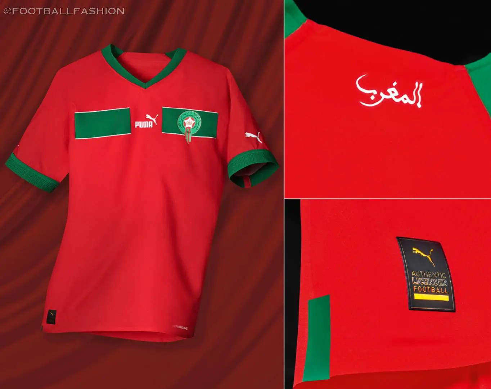
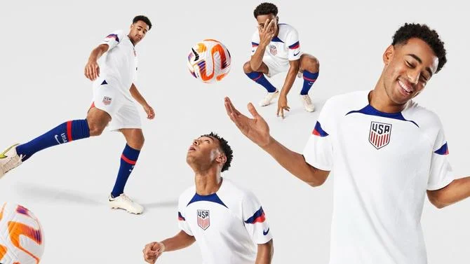
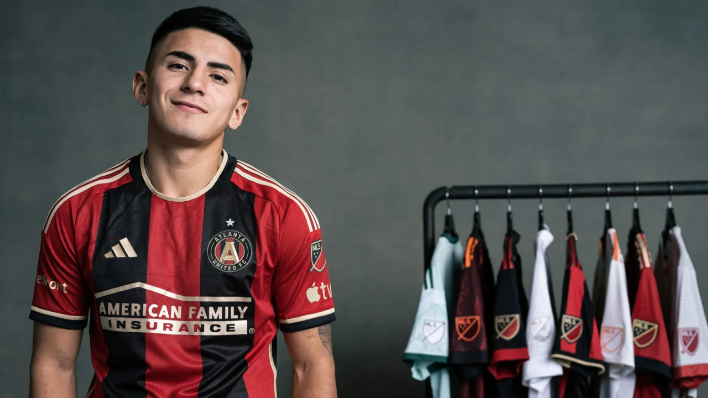

Kickerz Review was founded on the basis of love for soccer jerseys new and old, ugly and beautiful. Here at Kickerz Review we give you the lastest in the world of soccer jerseys. As well as creating a community that shares the same passion that we do.
The Latest
Morocco 2022-2023 Puma Home Jersey A fitting Retro Take.

Image by Football Fashion
USA 2022-2023 Nike Home Jersey Revolutionary Or One To Forget?

Image by Nike
Atlanta United 2023-2024 Adidas Home Jersey A Return To Tradition.

Image by Atlanta United
Manchester United 2022-2023 Adidas Home Jersey Sleek Yet Elegant